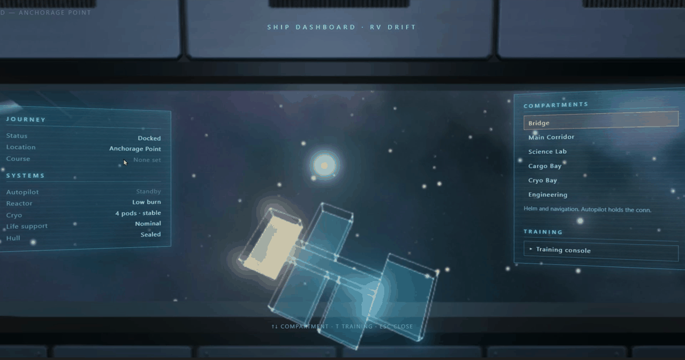
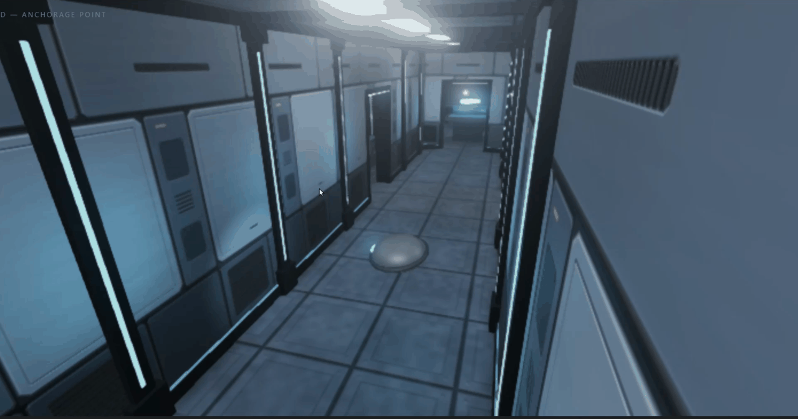
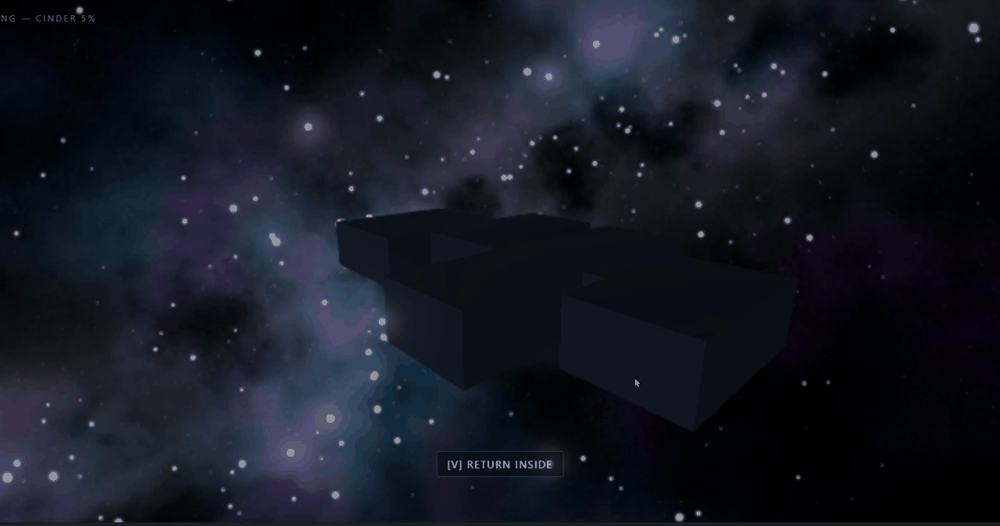

Build in Public, Day 2: Giving the Drone a Dashboard
On Day 1 I shared the idea: a space game where learning feels like playing. The game now has a name, DRIFT. Your consciousness has been uploaded into a small drone, the crew is asleep, and somebody has to do the rounds on the ship.
Watch the demo
What’s new: the ship dashboard
When the drone reaches the glowing wireframe on the bridge floor, the player can open the Ship Dashboard. It has three parts:
- Journey and systems on the left: status, location, course, autopilot, reactor, cryo pods, life support and hull.
- A 3D wireframe of the ship in the middle. When you pick a compartment, it lights up.
- Compartments and training on the right: the bridge, main corridor, science lab, cargo bay, cryo bay and engineering, each with a short status note. There’s also a training console.

The training console is a placeholder for now. It’s set up for an AWS Machine Learning Engineer certification drill, and a real question bank will plug in later. For now the player can log a session, and the ship’s voice replies: “Logged. One drill closer to that certification of yours.”
From the helm, the player can also set a course to one of two destinations, Aurelia or Cinder, and the autopilot takes over.
What I actually learned: controlling the perspective
Honestly, the dashboard isn’t anything groundbreaking. The real lesson today was learning how to prompt for the player’s perspective:
- A third-person camera that follows the drone through the corridors and onto the bridge.
- Free look and movement controls, so you can steer around the ship.
- A switch to an exterior view while the ship is in flight, and back inside again.


This is well outside my comfort zone. It’s stretching what I thought was possible when building an AI-assisted solution.
Status
- Explore the ship, open the dashboard, log a training session and set a course: ✅ working
- A real question bank for the training console: not yet
- The camera can still clip through the ceiling when it swings around, so it needs polish
Get involved
I’m planning to open source DRIFT. If you’re interested, send me a DM on LinkedIn.
And if you’re into NBA analytics, come say hi on my YouTube channel, NoFlightZone.